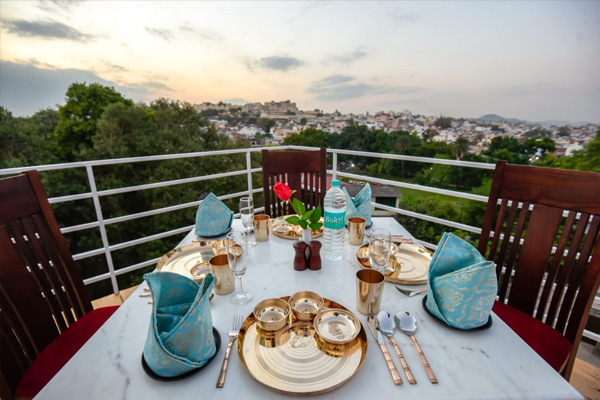

What is Udaipur Famous For?
Culture, Lakes, Palaces & More
Often referred to as the "City of Lakes," Udaipur is one of India's most celebrated travel destinations. Nestled among the Aravalli Hills of Rajasthan, the city is known for its magnificent palaces, shimmering lakes, rich cultural heritage, royal history, and timeless charm.

Unlike many destinations that are famous for a single attraction, Udaipur offers a complete travel experience. Whether you're interested in history, architecture, culture, food, photography, or romantic getaways, the city has something to offer every traveler.
So, what exactly is Udaipur famous for? The answer lies in a unique combination of natural beauty, royal legacy, and authentic Rajasthan hospitality.

Udaipur is Famous as the City of Lakes
The first thing most travelers associate with Udaipur is its beautiful lakes. The city is surrounded by interconnected water bodies that create a scenic landscape unlike anywhere else in Rajasthan.
These lakes are a major reason why Udaipur stands out among Rajasthan's desert cities.

Udaipur is Famous for Its Royal Palaces
The city's royal heritage is visible everywhere, but nowhere more dramatically than in its palaces.

Udaipur is Famous for Its Rich Mewar History
Founded in 1559 by Maharana Udai Singh II, Udaipur served as the capital of the Mewar Kingdom. Unlike many royal dynasties that disappeared into history, the legacy of Mewar remains deeply woven into the city's identity.

Udaipur is Famous for Heritage Architecture
One of the most distinctive aspects of Udaipur is its architecture. Walking through the Old City reveals centuries of architectural craftsmanship that continues to define the city's character. Many travelers find that simply wandering through the historic streets becomes one of the highlights of their trip.

Udaipur is Famous for Its Cultural Experiences
Beyond its monuments, Udaipur offers rich cultural experiences that help visitors connect with Rajasthan's traditions.
Udaipur is Famous as a Romantic Destination
Udaipur is often regarded as one of India's most romantic cities. The combination of lakes, royal architecture, and intimate settings creates a uniquely romantic atmosphere.

Udaipur is Famous for Traditional Rajasthani Cuisine
Food plays an important role in the city's identity. The city's rooftop restaurants and heritage dining experiences add another dimension to the culinary journey.

Udaipur is Famous for Its Markets and Handicrafts
Shopping is another reason many travelers love Udaipur. Areas such as Hathipole Bazaar and Bapu Bazaar offer excellent opportunities to discover local craftsmanship.

Udaipur is Famous for Heritage and Boutique Stays
Unlike destinations dominated by modern hotels, Udaipur has successfully preserved many heritage properties. Many travelers choose a hotel in Udaipur that reflects the city's royal character rather than opting for generic accommodation.
Properties such as Kaladwas Lal Haveli offer travelers an opportunity to experience traditional Mewari architecture and personalized hospitality while staying connected to the city's heritage.
Why Udaipur Continues to Attract Travelers from Around the World
What makes Udaipur truly special is that it offers much more than sightseeing.
Few destinations combine all of these elements so seamlessly. Whether you're spending two days or a week in the city, Udaipur leaves a lasting impression that encourages many travelers to return.
History
Culture
Architecture
Nature
Food
Shopping
Romance
Hospitality


Heritage and Boutique Stays in Udaipur
Unlike destinations dominated by modern hotels, Udaipur has successfully preserved many heritage properties. Many travelers choose a hotel in Udaipur that reflects the city's royal character rather than opting for generic accommodation.
Properties such as Kaladwas Lal Haveli offer travelers an opportunity to experience traditional Mewari architecture and personalized hospitality while staying connected to the city's heritage.
Book Your Stay View Rooms